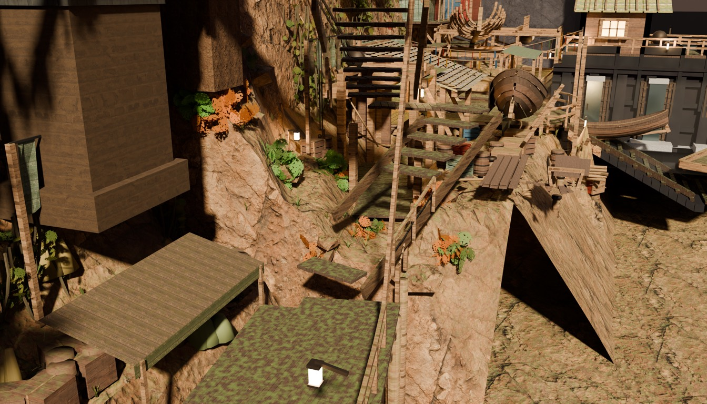
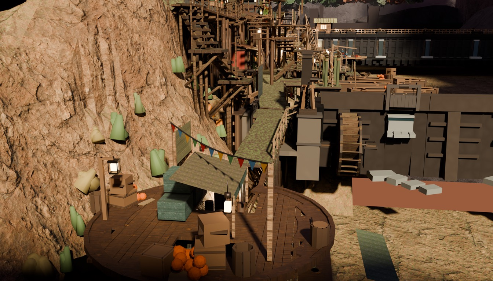
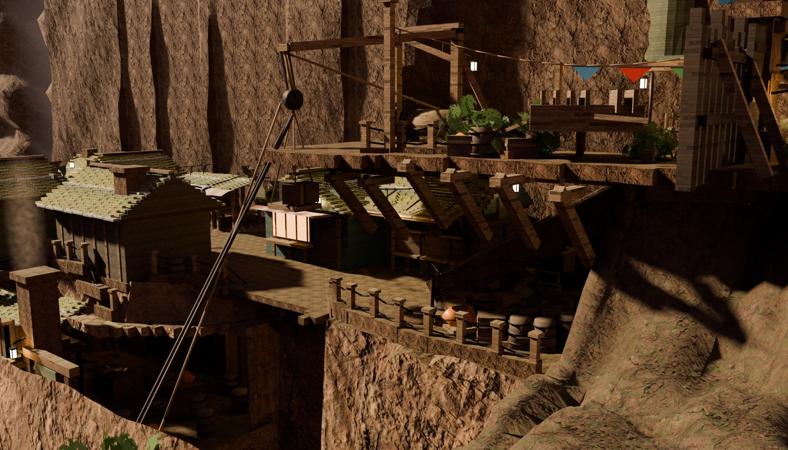
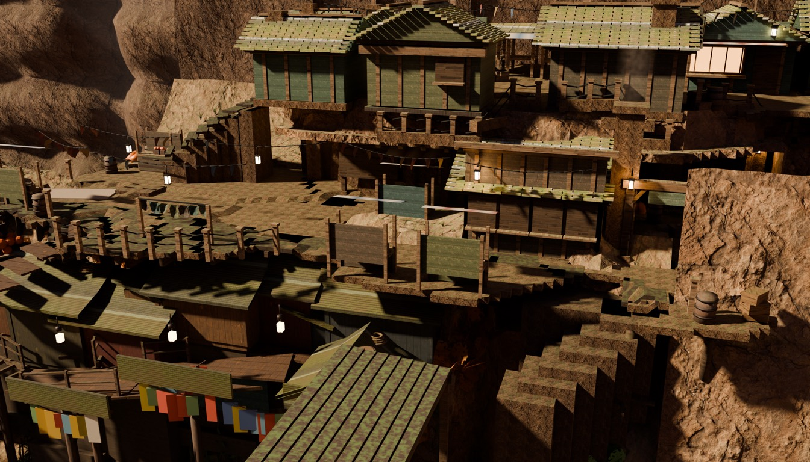

Worklist: the user's five verbatim complaints + red-team sweep 20260806-1
(docs/qa/redteam/run-20260806-1-findings.md, fc10395). Every claim taken was
MEASURED on an instrument before anything was built — the pixel ray-census replays the
solved camera of the exact plate the judge saw and names the mesh under each complained
pixel. Before-images are the closing-bake plates (baked 2026-08-06 ~12:00); after-images
are the live plates (/assets/scenes/del-cine/). Serve repo /public
and /docs on one port to view.
Fix 1 — THE WATER BAKE, RESTORED (waterfront sev3 ×2 · north-landing sev3 · user complaint 3)
"The cliff surface is a single-sided paper-thin polygon sheet with no backface
or volumetric geometry beneath it" · "ends abruptly ... exposing a hollow gap underneath"
(waterfront, naive, sev3, upheld) — "An untextured flat orange rectangle holding primitive
grey blocks floats in mid-air" (north-landing, naive, sev3, upheld) — and the user:
"the water's visual read".
Measured (pixel ray-census, scratchpad/pixel_probe.py,
calibrated on the walk-lantern pixel to the exact mesh): the whole tan "marble floor" across
waterfront's right half IS water_pool-mid (z 0.20 under every probed pixel); the
north-landing "orange rectangle" IS water_pool-downstream; the "hollow gap" was
opaque unlit water in the bank's shadow. Root cause: water_pool-mid and
-downstream were bare 16/8-vertex boxes with no Col colour
attribute — locksfoot_build.py:850 notched the mid pool through
join_meshes after tranche 2 shipped and silently dropped the ratified
depth→alpha bake (water_pool-upstream kept its layer, alpha 0.02–0.97;
t2_water_shader.py:178 records mid at 26,512 baked verts).
Fix class: re-run of the SHIPPED recipe, not a new look — t2_water_bed's
four shelves verified present, then t2_water_shader.py -- save: mid 8,648 verts
alpha 0.06–0.97 · downstream 4,290 · lf_lock_water 90; verified in the re-opened
artifact. The restoration is what the user ratified in
docs/plans/water-transparency.md (AS BUILT).

waterfront — BEFORE (the "marble floor" + the black hollow under the bank)waterfront — AFTER (water reads as water; the bank runs into the shallows)

north-landing — BEFORE (the salmon slab + grey blocks)north-landing — AFTER (tail water + white churn)
Fix 2 — FIVE LEGIBLE SHOP DOORS (user complaint 5 · checklist door verdicts)
"Enter Weapon Shop: VISIBLE-BUT-ILLEGIBLE — darkened wall opening lacks clear
door framing or interactive cues" · "Enter Cookhouse: ... too dark and merges into the
surrounding shadowed wood" · Boatmen's Rest / Item Shop / Armor Shop "OCCLUDED — obscured in
shadow" — and the user: "every enterable front should read as an entrance a player recognizes".
Measured: each doorway was doorway()'s dark
mat_timber_dark slab on a dark wall. Ray-census from each door's OWNING solved
camera: 4/5 door slabs are directly visible — the OCCLUDED verdicts were
shadow-perceptual, so legibility (not camera work) is the right fix class. The cookhouse door
faces south while quay-west shoots from the north — geometrically invisible in that one plate
(its own roof blocks the ray by ~3 m): a camera-ownership note for the seam lane, not a
dressing defect; the south door is the real, walkable entrance.
Fix class:tools/door_legibility.py — additive carrier, 62 objects in
DOOR_LEGIBILITY: painted panel in each shop's accent paint, light freshwood
IN-FRAME pilasters (proud side-jambs would clip the built window frames — the armor shop's
window frame overlaps its own door slab), stone threshold at the measured street level, and a
warm glow from the town's own lit-window materials (mat_*_window_a): a transom
where measured headroom allows (cookhouse, 0.69 m), lit panes in the door's upper half under
the pentices elsewhere (0.03–0.48 m headroom). Street levels re-measured in-session and
asserted (drift gate ±0.08). walk_engine_gate GREEN after (0 lost cells of 4,097).
shelf-east — BEFORE (weapon + armor fronts)shelf-east — AFTER

shelf-west — BEFORE (inn + item fronts)shelf-west — AFTER

quay-west — BEFORE (cookhouse)quay-west — AFTER
Fix 3 — THE TAIL-RACE BOIL (north-landing "primitive grey blocks" · user complaint 4)
Measured: the blocks are lf_dam_boil — twenty axis-aligned
box prisms in flat dark grey. Fix:tools/boil_dress.py — seeded vertex
jitter (±0.22 m plan, ±0.10 m z) + mat_boil_foam at the water shader's own
foam-lobe tone; the finding-86 surface-straddle contract re-asserted after the edit
(z −4.21..−3.58 over −3.80). With the restored water alpha, the shader's AO foam band now
rings the lumps and the whole group reads as churn (see the north-landing pair above).
Frustum-affected set & gates
64×36 ray-census per solved camera against the changed objects: 12 of 15
plates affected (loop-stairs, lockhead, cottage CLEAN) — waterfront 20.4% of frame ·
fishdock 28.4% · crossing 13.1% · north-landing 15.7% · lockfive 8.8% · weave 4.9% ·
boatyard 4.8% · gate 6.2% · deep-stairs 1.1% · shelf-east/west + quay-west (doors <0.5%
each). All 12 re-baked, 1-wide serial (~3.2 min/plate). Gates: walk_engine_gate del-cine
GREEN (file 4,097 = engine 4,097 cells) · routes_derive --check clean · findability +
dialogue + cine/slice: see DAYLOG entry.
Blind verdict
AFTER WINS ALL FOUR PAIRS. Two fresh Anthropic-side
judges, shuffled anonymized packs (blind_pack), zero external spend, 2026-08-07 ~02:55.
Water pack (full waterfront + north-landing plates): north-landing before 3/10 ("reads
as a broken or work-in-progress build ... the water didn't load") → after 5/10; waterfront
before 4/10 ("the missing water hollows out half the frame") → after 6/10 ("the water sells
the space"). Pair verdicts verbatim: "a flawed river beats a missing one decisively" ·
"img-d [after] by a clear margin."
Doors pack (identical crops, shelf-west + shelf-east): after wins both — shelf-west
"reads better as shipped art, and clearly better for enterable doorways ... the door
left-of-center has a lit four-pane window in it, which both confirms it is a door and says
the building is occupied; in [before] that door is unlit and effectively invisible";
shelf-east "reads better on both counts." Ranking across the four: after-SE > after-SW >
before-SE ≈ before-SW. The judge's mechanism, verbatim: "a lit opening is the single
strongest enterability cue these frames have, and wherever it's absent the buildings read
as sealed props."
Judge residuals, recorded (all pre-existing classes or refinements, none a
regression): the dressed boil still reads as "flat white untextured slabs" at plate
distance; knife-sharp waterline (no foam/shore blending); the dam/lock massing reads
untextured; crushed-black street shadow floors; blown-out white awning/stall panels;
"the window locates the building, not the door itself" — the weapon door's frame/step
survive in geometry but are shadow-crushed at plate distance.
Deferred, honestly
The bank-crest silhouette at waterfront is still a heightfield horizon (much softer
against real water); shoreline rock lumps remain an option if the judge still reads it thin.
Sky/backdrop class + any NEW water look — waits for the calibrated judge lane (a183373
checklist families, unvalidated; Gemini spend-capped tonight).
quay-west cannot see the cookhouse's real door (measured) — seam/camera-ownership lane.
Railings/market-stand detail pass (user complaint 4, remainder) — not reached this round.